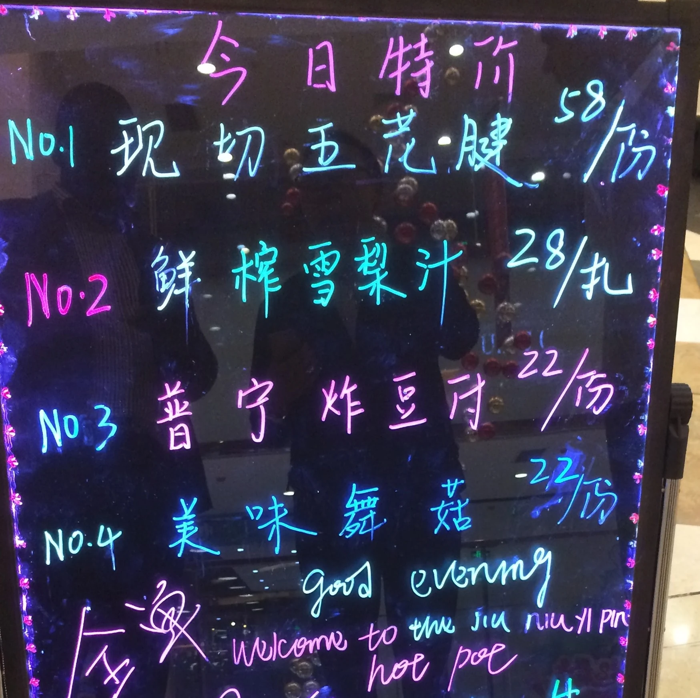

Dès la descente de l’airbus, je peux apercevoir les deux terminaux de Pudong Intl. Airport qui se font face ; ces structures à l’architecture d’une beauté contemporaine, constituées de poutres régulières qui dans l’ombre soutiennent les ondulations de chapiteaux d’acier, exposent au nouvel arrivant un premier moment d’émerveillement. Sur le trajet vers le cœur de Shanghai, des deux côtés de la route, une succession de buildings flirte avec les nuages sur plusieurs dizaines de kilomètres. Tout le long du trajet, le béton succède au béton : jamais l’humanité n’en avait coulé autant, ailleurs… il faut bien loger les 25 millions d’habitants de cette ville-pays, la plus peuplée de ce pays-continent au milliard d’habitants.
La gastronomie locale à chaque coin de rue cohabite avec les grands noms de la restauration rapide internationale. Celle-ci, hétérogène, offre un large spectre de sensations gustatives… toutes ne sont pas communes… Dans un grand nombre de restaurants, les tables fonctionnelles servent à cuire les aliments crus apprêtés en cuisine. L’hôte aura le choix des ingrédients et du dosage des différentes épices. Certaines préparations peuvent offrir de gracieux moments d’éternité ; certaines autres, moins commodes, sont réservées aux papilles aventureuses ; dans les deux cas, cet exotisme hétéroclite est toujours un voyage vers un univers plus sensoriel.

Le métro de Shanghai est souterrain, ultra-moderne et bilingue. Il dessert toute la grande ville et ses banlieues… Presque toujours surchargé, il est néanmoins un exemple de régularité et de ponctualité… À l’intérieur, je suis essentiellement entouré d’inconnus aux visages similaires… des gens d’ailleurs, des gens d’ici, très peu d’étrangers visibles… Shanghai, c’est aussi ces marchés de contrefaçon, de véritables labyrinthes souterrains jonchant les quais des stations de métro - Museum of Science and Technology - ces marchés sont le repère d’étrangers, principalement occidentaux à la recherche de grands noms de chez eux, manufacturés pas très loin, dans des conditions de travail dont ils n’auront pas à se soucier, tellement l’essentiel se résume à « best quality & cheap price » : la contradiction se trouve dans la phrase… le tout dans un anglais des plus approximatifs.
Sur Nanjing Road, les buildings sont de magnifiques sculptures de béton qui se dressent et couvrent l’horizon avec l’arrogance du fort sûr de sa force. Tous ces mètres carrés à plusieurs dizaines de milliers d’euros le mètre carré sont occupés… Déambulant dans cette exubérance vers le Bund, je peux à peine apercevoir la statue de Mao qui jouxte la place tant elle est étouffée par l’affluence des touristes et le crépitement de leurs appareils photo. Sur le mur adjacent, les habitants de Shanghai et d’ailleurs expriment leurs besoins, leurs désirs, leurs espoirs au travers de petits billets qu’ils accrochent maladroitement. Cela remet en perspective l’émerveillement extrahumain qui s’était fait jour en moi tout le long de ce périple. Un peu plus loin, depuis la jetée, la vue de l’île de Shanghai et de ses bâtiments gigantesques sur un périmètre réduit près des berges de la rivière Huangpu est un clin d’œil presque parfait aux Manhattan de l’époque des deux tours.
La croissance à deux chiffres et le développement corollaire de cette ville cosmopolite ne finissent plus d’attirer le monde entier : étudiants, chercheurs, entreprises, débrouillards… On est loin du pays dénigré qui manufacturait tout pour tout le monde à moindre coût… Les étrangers du monde entier viennent désormais les rêves plein les yeux… L’Occident s’y retrouve comme l’Afrique en Occident. En quelques décennies, ce pays-continent a su rééquilibrer voire inverser le rapport de forces avec ses prétendants de l’époque : ils ont réussi là où nous, Africains, n’arrêtons pas d’échouer…